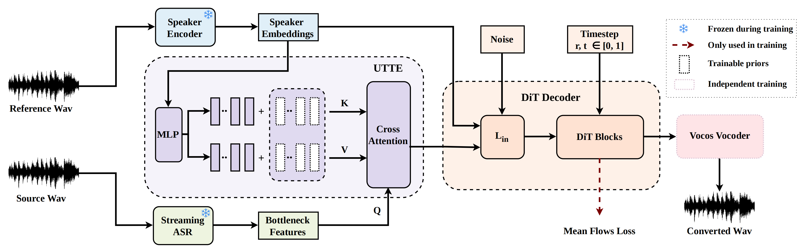

MeanVC 2
Robust Low-Latency Streaming Zero-Shot Voice Conversion
Abstract Streaming zero-shot voice conversion (VC) has become increasingly popular due to its potential for real-time applications. The recently proposed MeanVC achieves lightweight streaming zero-shot VC, but it has several limitations: its chunk-wise autoregressive denoising doubles the effective training sequence length, conversion quality degrades under small-chunk settings, and its timbre encoder directly relies on reference mel-spectrograms, making it sensitive to reference audio quality. To address these limitations we propose MeanVC 2. We introduce future-receptive chunking (FRC), which explicitly schedules past and future receptive fields across diffusion transformer decoder layers and removes clean-chunk teacher forcing. By incorporating bounded future context, FRC enables stable conversion with a 40~ms chunk size. We further introduce a universal timbre token encoder, which constructs a timbre representation from a global speaker embedding and retrieves fine-grained timbre cues via cross-attention, improving robustness to low-quality references and enhancing zero-shot speaker similarity. Experimental results show that MeanVC 2 significantly outperforms MeanVC, while reducing latency from 211 ms to 110 ms.
Contents
This page is for research demonstration purposes only.
Model Overview

Figure 1. Overall architecture of our proposed MeanVC 2.
Streaming Zero-shot VC
- StreamVoice+1: a streaming VC system based on language model.
- MeanVC2 : a lightweight and streaming zero-shot voice conversion system.
| Reference | Source | StreamVoice+(80ms) | MeanVC(80ms) | MeanVC(160ms) | MeanVC 2(40ms) |
|---|---|---|---|---|---|
Celebrities Voice Conversion
| Celebrity Voice | Source | MeanVC(80ms) | MeanVC(160ms) | MeanVC 2(40ms) |
|---|---|---|---|---|
蔡徐坤 (Xukun Cai) |
||||
周杰伦 (Jay Chou) |
||||
丁真 (Zhen Ding) |
||||
罗永浩 (Yonghao Luo) |
||||
余承东 (Chengdong Yu) |
||||
Ethics Statement
MeanVC 2 and the demostrating audios in this page are intended solely for academic research and ethical, non-commercial use. Users must obtain explicit consent from all involved speakers (source and target) before any voice conversion, and must not employ the system for impersonation, fraud, disinformation, harassment, or any illegal or deceptive activities. Users are required to comply with all applicable laws regarding privacy, intellectual property, and anti-deepfake regulation. The developers disclaim all liability for unethical or unlawful use and request that any misuse be reported through the designated contact channels.